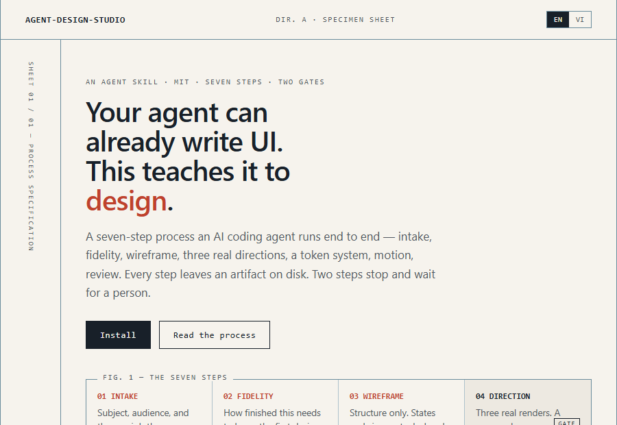
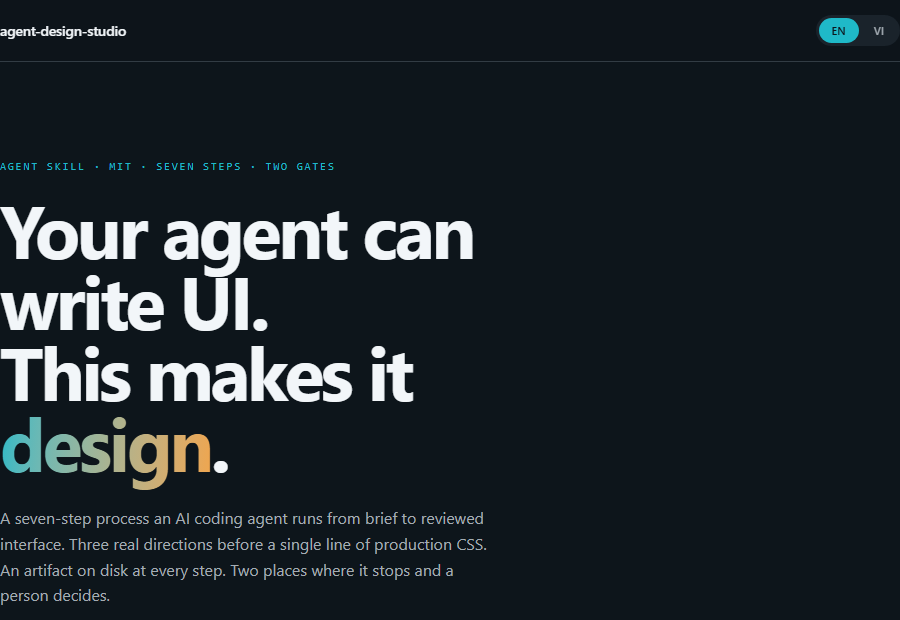
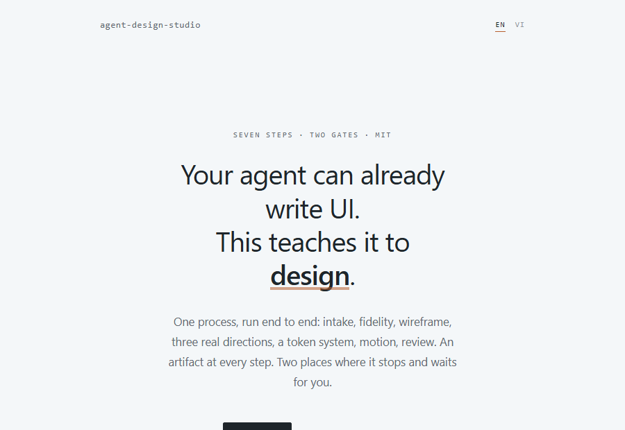
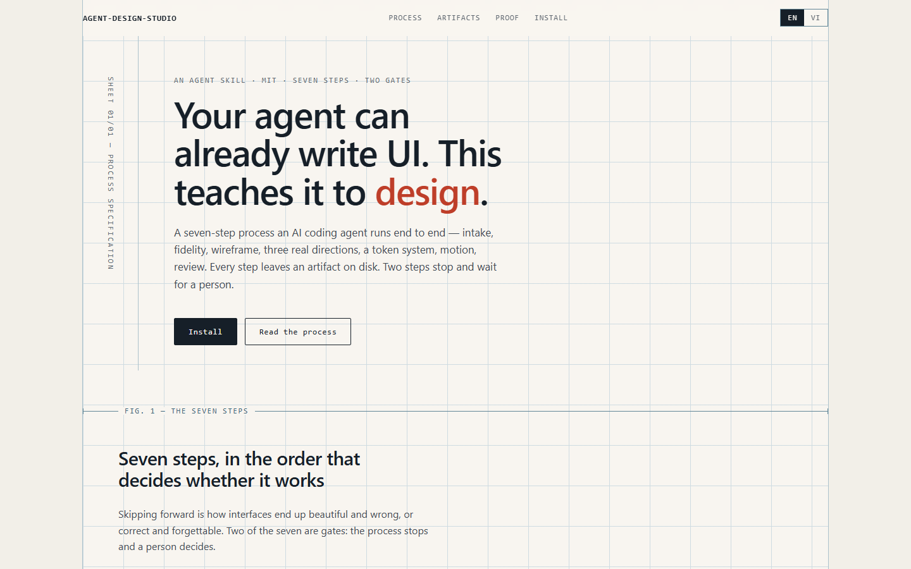
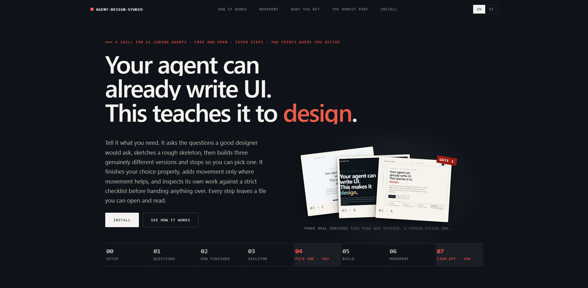

A real run — every file, opened
The run that failed, and the two that followed it
This is the design run that produced the page you just came from. Not a reconstruction and not a demo — the actual folder, with the version that was turned down still in it. Open any file below and you are reading what the process wrote.
Tiếng Việt: đây là hồ sơ đầy đủ của một lần chạy thật — mở bất kỳ file nào để đọc đúng thứ quy trình đã tạo ra. Nội dung các file giữ nguyên tiếng Anh.
- Mode
- static-artifact
- Deliverable
- this project's site
- Pass 1
- 7.8 — rejected
- Pass 2
- 8.3
- Pass 3
- 8.5 — shipped
- Pack
- 1.0.0 → 1.2.0
01 — what happened
Three passes, in the order they happened
The honest shape of this run is not one clean sweep through seven steps. It is a run that passed its own inspection, got turned down by the person paying for it, and went round again — twice. Each pass kept its own folder.
Built, inspected, published
The full seven steps, start to finish. Every measurable check passed: contrast, keyboard, mobile, no overflow. The weakest mark was craft, and the inspection let it through because the average looked respectable.
turned down at gate 2 7.8Rebuilt on the losing direction
The rejected option B was still on disk and still runnable, so promoting it cost hours rather than days. Three rules were added to the process itself the same day, so a page cannot fail this way again. See its first screen →
passed, held for review 8.3
Two more directives, answered
Plain language everywhere a human reads, and motion that belongs to the page rather than only to the demos. 21 animations accepted, 18 refused, every one with its reason recorded.
shipped 8.5It reads as a wireframe — a spec document, not a designed website. Almost no colour. The motion is invisible on first load. One even rhythm all the way down. It has to read as a product somebody invested in.Đức · 2026-08-24 · on the live v1.0 page · recorded in 03-direction-decision.md
02 — the folder
Pass 1, step by step
The complete run. Every row is a real file you can open — markdown artifacts render as plain text, the wireframe and the three directions are live HTML that still runs. Nothing here is a summary of work done somewhere you cannot see.
Wireframe
Structure only, deliberately unfinished — the comments in the source are the structural questions it was asking.

Direction gate
Three genuinely different renders of the same content, then a full stop until a person chose. Gate 1 — human-approved
Design system
Tokens, component contracts, and where every asset came from.
Build
What was built, what was deferred, and what the code does not yet do.
Motion
A second pass over the built page. Every animation accepted or refused, with its reason.
Review
The page inspecting itself against a fixed rubric — and passing, which is the interesting part. Gate 2 — this is the one the owner overruled

03 — the gate
The three directions, still runnable
Each came from a different anchor, on purpose, so they could not converge into one layout with three palettes. A person picked A. Months of hindsight say B was the better page — and because B was never deleted, that was recoverable.

The process drawn as a drafting sheet: figure rules, captions on the rule, stamps where a person signs. Won the vote, then lost the room.
run it · full capture

Slate where the machine works; the page turns to paper wherever a human decides. This is what the site became after the rejection.
run it · full capture

Wide margins, restraint, type carrying the argument. The quietest of the three, and the one that had least to say in three seconds.
run it · full capture
04 — the scores
What actually moved
Six dimensions, scored against a fixed rubric each pass. The rejection did not change most of them — it changed craft, which is precisely the mark the first review had waved through at 7.
pass 1 — 7.8 pass 3 — 8.5
The mark that shipped the failure. A rule was added: on anything public, craft below 8 blocks the release outright, whatever the average says.
New hard floor. Show a cold eye the first screen only for three seconds. "A document" is a blocking answer, like a contrast failure.
Both colour defects in pass 2 sat in elements a hand-written checklist had omitted. Contrast is now measured across all 67 text-bearing elements.
A restrained direction now owes at least one unmistakably designed moment per screen. The v1.0 page is named in the rule as the failure it describes.
05 — the frames
The same first screen, before and after
The rejection was about the first viewport, so this is the comparison that mattered. Full-page captures were explicitly ruled out as evidence — they flatter a page by showing a visitor something no visitor ever sees at once.





06 — the fine print
What was changed before publishing this
A fixture that quietly edits its own evidence is worth nothing. Every change made to these files on the way out is listed, counted, and reproducible.
11 edits, in 5 files
Two absolute paths from the author's machine became
<local path>. Nine mentions of an internal reviewing agent's name
became "the design review". Nothing else was touched — not a typo, not a score, not
a sentence that reads badly.
The owner's name and quote stay, because they are already published on the page this run produced.
Frozen on purpose
These artifacts are a public fixture, not living documentation. They record what the pack produced at v1.0.0 through v1.2.0 and are not retro-fitted when the pack moves on. Later versions get a note, never an edit.
The full ledger — allowlist, every rule, what was left out and why — is in ABOUT.md.